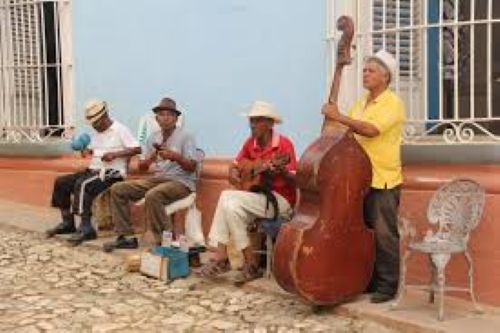

Trinidad

The music of Trinidad and Tobago is highly diverse and reflects the country's mix of African, Indian, European, and other cultural influences. Its most famous genres include calypso, soca, chutney, and steelpan music, many of which developed through cultural blending and historical experiences like slavery and indentured labor.
Calypso originated from African traditions and became a way for people to share news, express opinions, and provide social and political commentary. It later evolved into other genres, especially soca, a faster, dance-oriented style that combines calypso with Indian rhythms and is now central to Carnival celebrations.
Another important genre is chutney music, which developed from the Indo-Trinidadian community. It blends Indian musical elements (like bhajans and folk songs) with Caribbean styles such as calypso and soca, symbolizing the country's multicultural identity.
The country is also known for the steelpan, the only acoustic instrument invented in the 20th century, created from oil drums and now a national symbol.
In addition to these major styles, Trinidad and Tobago has many other genres and fusions—such as rapso, parang, and chutney-soca—showing constant innovation and cultural mixing. Music plays a central role in national life, especially during Carnival, where it is tied to celebration, identity, and history.
Reference for Trinidadian music